كل ما في طيبةEverything in Taybah
كل ميزة في التطبيق، في مكان واحد.Every feature in the app, in one place.
المصحفThe Mushaf
القراءة بالصفحة والسورةRead by page and surah
مصحف المدينةThe Madinah Mushaf
صفحةً صفحة وسطرًا سطرًا، كما طُبع في مجمع الملك فهد لطباعة المصحف الشريف.Page by page and line by line, as printed by the King Fahd Glorious Quran Printing Complex.
ثلاثة أوضاع للقراءةThree reading modes
عرض المصحف، وعرض القراءة، وعرض التركيز.Mushaf view, Reading view and Focus view.
وضع التركيزFocus mode
للقراءة والحفظ، مع اختبار ذاتي للمراجعة.For reading and memorization, with a self-test for revision.
فهرس وبحثIndex and search
فهرس السور والأجزاء، وبحث سريع بالكلمة مع تجاهل التشكيل.A surah and juz index, and fast word search that ignores diacritics.
نص محفوظVerified text
يُتحقَّق من سلامة الآيات البالغة ٦٢٣٦ آية قبل كل إصدار.All 6,236 ayahs are verified before every release.
يعمل دون اتصالWorks offline
يفتح المصحف فورًا دون إنترنت.The mushaf opens instantly with no internet.
خط المصحف وحجمهMushaf font and size
اختر خط الرسم العثماني، وكبّر الخط أو صغّره.Choose your Uthmani script font, and enlarge or reduce the text.
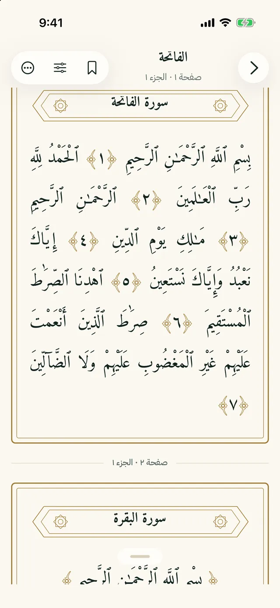
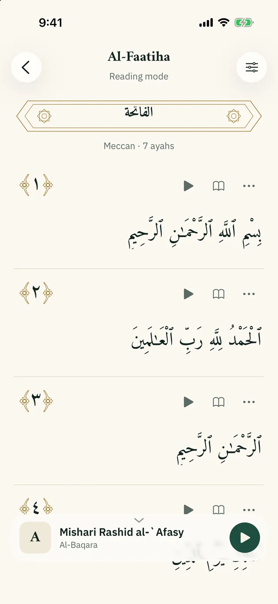
التفسيرTafsir
تسعة تفاسير عربية أصيلةNine classical Arabic tafsirs
التفاسيرThe tafsirs
التفسير الميسر، وتفسير ابن كثير، والطبري، والقرطبي، والبغوي، والسعدي، والجلالين، والوسيط، والتحرير والتنوير لابن عاشور.al-Muyassar, Ibn Kathir, al-Tabari, al-Qurtubi, al-Baghawi, al-Sa'di, al-Jalalayn, al-Wasit and Ibn Ashur's al-Tahrir wa al-Tanwir.
كما كتبها أصحابهاAs their authors wrote them
منسوبةً إليهم، دون اختصار ولا إعادة صياغة.Credited, never shortened or rewritten.
دون اتصالOffline
نزّل ما تشاء منها واقرأه دون إنترنت.Download the ones you want and read them offline.
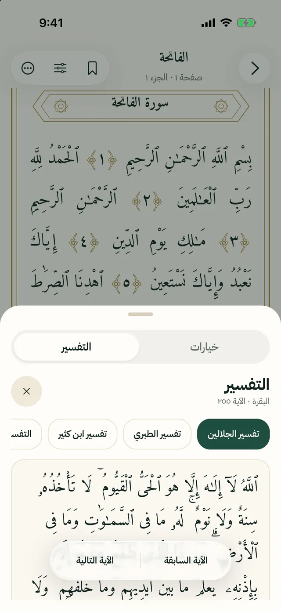
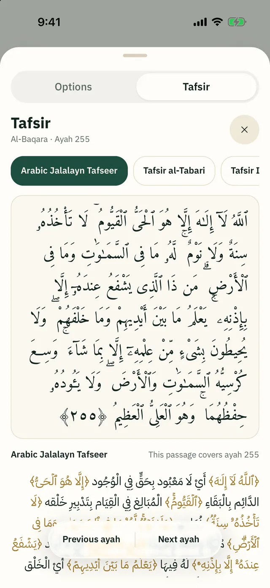
الاستماعListening
١٧ قارئًا من كبار القراء17 renowned reciters
القرّاءReciters
منهم: محمود خليل الحصري، ومحمد صديق المنشاوي، وعبد الباسط عبد الصمد، ومشاري العفاسي، وماهر المعيقلي، وعبد الرحمن السديس، وسعود الشريم، وسعد الغامدي، وياسر الدوسري.Including Mahmoud Khalil al-Husary, Muhammad Siddiq al-Minshawi, Abdul Basit Abdul Samad, Mishary Alafasy, Maher al-Muaiqly, Abdul Rahman al-Sudais, Saud al-Shuraim, Saad al-Ghamdi and Yasser al-Dosari.
تتبّع الكلمةFollow the word
تمييز الكلمة المتلوّة في المصحف مع القرّاء الذين تتوفر توقيتاتهم.The recited word is highlighted on the page with reciters whose timings are available.
للحفظ والنومFor memorizing and sleep
تكرار الآية للحفظ، ومؤقت للنوم.Ayah repeat for memorization, and a sleep timer.
في الخلفيةIn the background
الاستماع في الخلفية ومن شاشة القفل.Playback in the background and from the lock screen.
دون اتصالOffline
نزّل السور واستمع إليها دون اتصال.Download surahs and listen offline.
السرعة ونطاق الآياتSpeed and ayah range
غيّر سرعة التلاوة، واختر نطاقًا من الآيات وكرّره.Change the playback speed, and choose a range of ayahs to repeat.
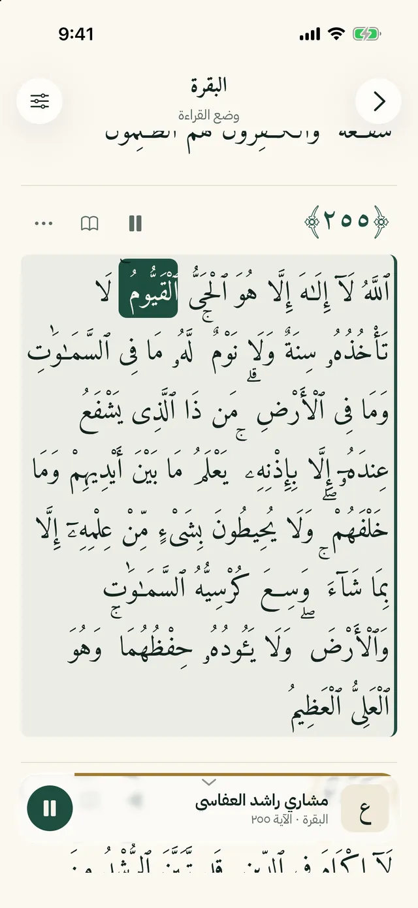
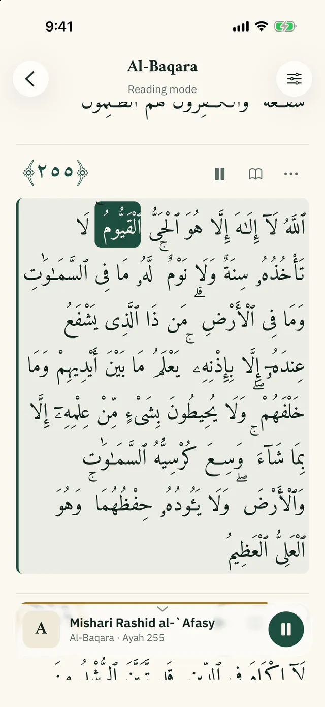
الصلاة والقبلةPrayer and Qibla
مواقيت لموقعك، تُحسب على جهازكTimes for your location, calculated on your device
مواقيت الصلاةPrayer times
بتقويم أم القرى، دون إرسال موقعك إلى أي خادم.Using the Umm al-Qura method. Your location is never sent to a server.
التنبيهاتNotifications
تنبيهات بدخول أوقات الصلاة، مع اختيار صوت الأذان وتنبيه للإقامة.Prayer time notifications, a choice of adhan sound and an iqamah alert.
القبلةQibla
بوصلة القبلة، أو اختر مدينتك يدويًا.A Qibla compass, or choose your city by hand.
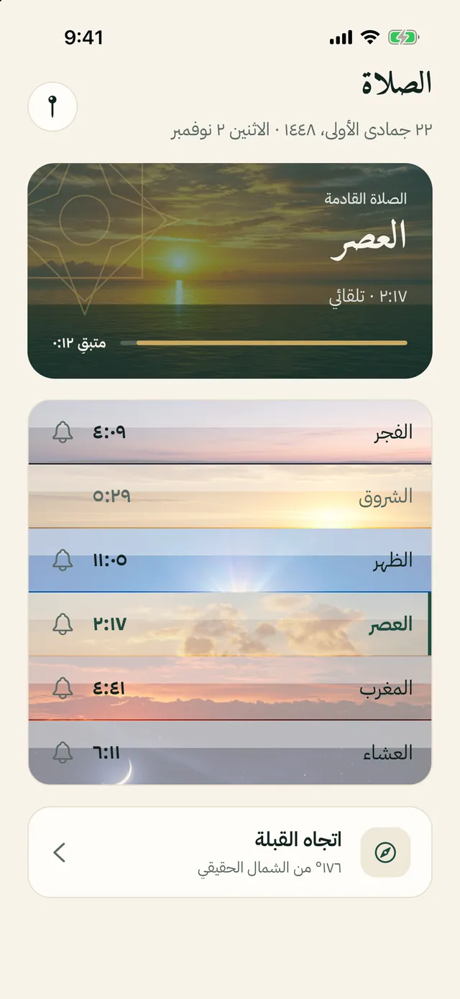
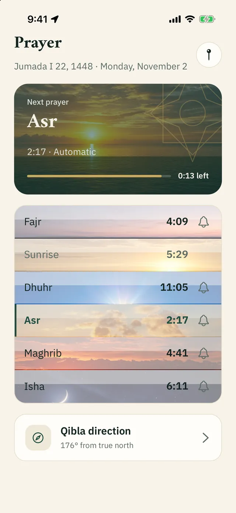
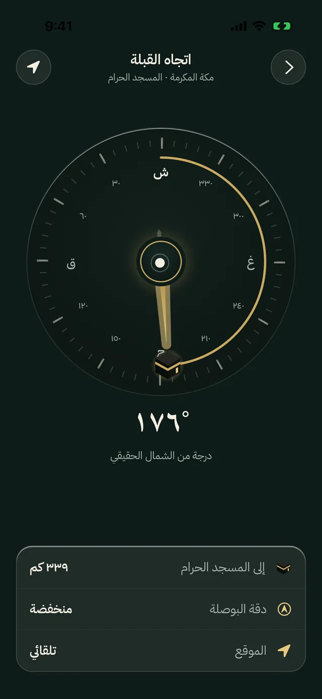
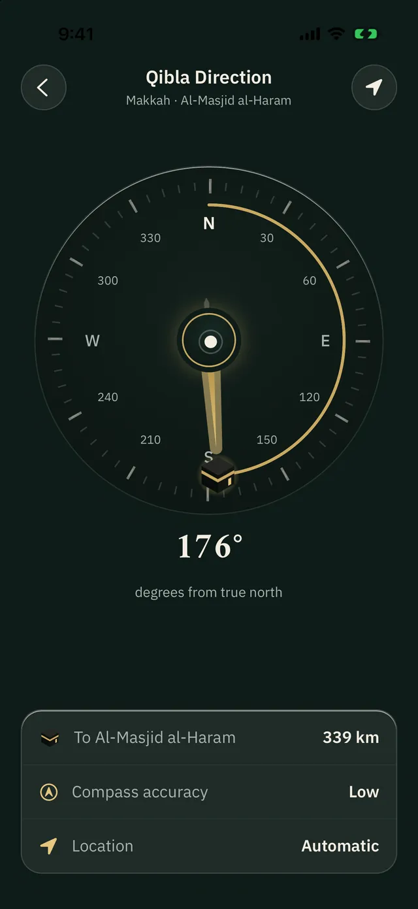
الأذكار والمسبحةAzkar and Misbaha
من «حصن المسلم»From Hisn al-Muslim
أذكار اليوم والليلةDaily Azkar
أذكار الصباح والمساء وأذكار حسب المناسبة.Morning, evening and by occasion.
عدّاد وعلامة إتمامCounter and done mark
عدّاد للأذكار المقيّدة بعدد، وعلامة إتمام لكل ذكر.A counter for every dhikr with a set number, and a done mark for each.
مفضلة وتذكيرFavourites and reminders
احفظ ما تحب، وذكّر نفسك بأوقات الأذكار.Save the ones you love and get reminders at their times.
الاستماعListening
مشغّل لتلاوة الأذكار، مع تنزيلها للاستماع دون اتصال.A player for recited Azkar, with downloads for offline listening.
المسبحةMisbaha
مسبحة إلكترونية بهدف ٣٣ أو ٩٩ أو ١٠٠ أو ما تختاره، على الهاتف والساعة والودجت.A digital misbaha with a target of 33, 99, 100 or your own, on the phone, the watch and a widget.
بحث ومشاركةSearch and share
ابحث في الأذكار وشارك ما تحب.Search the Azkar and share the ones you love.
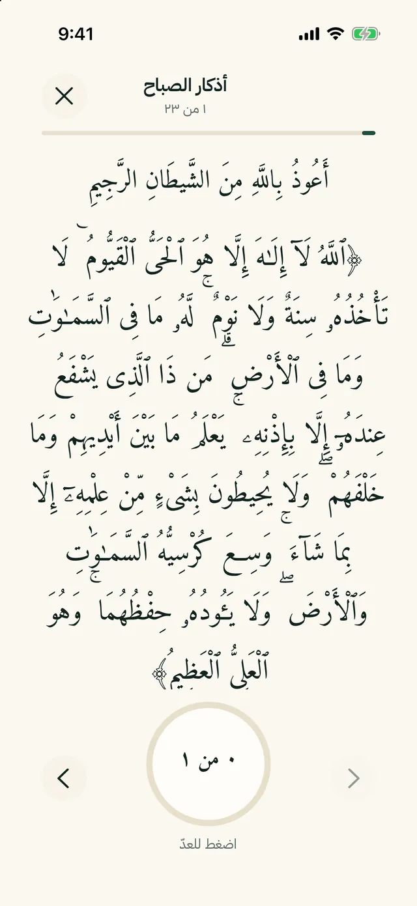
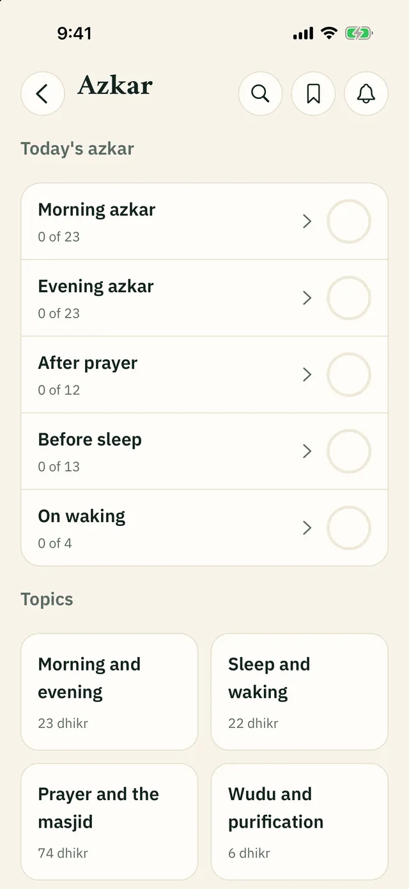
التقويم الهجري والهلالHijri calendar and moon
يُحسب على جهازك دون إنترنتCalculated on your device, no internet needed
التقويم الهجريHijri calendar
تقويم أم القرى مع المناسبات، وقد يختلف بيوم عن إعلان بلدك، ويمكنك تعديله.The Umm al-Qura calendar with occasions. It may differ by a day from your country's announcement, and you can adjust it.
رؤية الهلالMoon sighting
عمر القمر عند الغروب ونسبة الإضاءة لموقعك. تقدير حسابي لا يغني عن الإعلان الرسمي.Moon age at sunset and illumination for your location. A calculation, not a replacement for the official announcement.
وِردك اليوميYour daily wird
ختمتك وأهدافك وعلاماتكYour Khatma, goals and marks
خطة الختمةKhatma plan
تقسّم القرآن على الأيام التي تختارها.Divides the Quran over the days you choose.
الأهداف اليوميةDaily goals
لوردك وأذكارك وتسبيحك، مع متابعة التقدّم.For your wird, Azkar and tasbih, with progress tracking.
مصحفيMy Mushaf
علامات وتظليل وملاحظات على الآيات.Bookmarks, highlights and notes on ayahs.
التذكيراتReminders
للصلاة والأذكار والورد والمسبحة وسورة الكهف يوم الجمعة.For prayer, Azkar, wird, the misbaha and Surat al-Kahf on Friday.
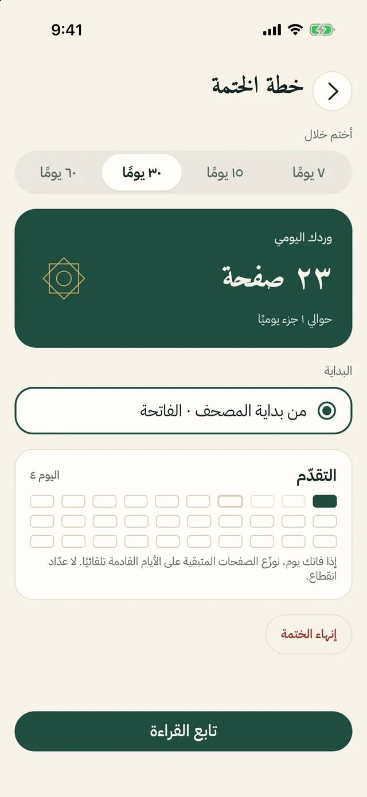
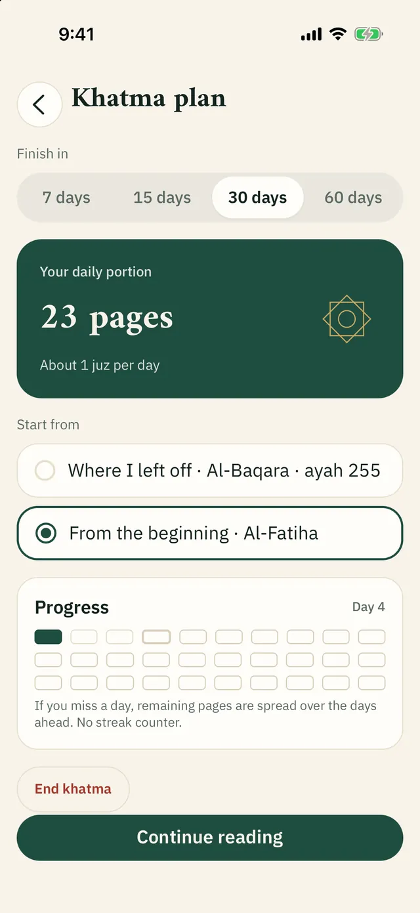
الودجات وApple WatchWidgets and Apple Watch
طيبة على شاشتك الرئيسية وعلى معصمكTaybah on your Home Screen and your wrist
الودجاتWidgets
الصلاة القادمة، ومواقيت اليوم، وتقدّم اليوم، ومتابعة القراءة، والمسبحة، والأذكار. لا نص قرآني ولا نص ذكر.Next prayer, today's times, today's progress, continue reading, misbaha and Azkar. Never Quran or dhikr text.
Apple WatchApple Watch
الصلاة القادمة ومواقيت اليوم والمسبحة وحالة الأذكار.Next prayer, today's times, the misbaha and Azkar status.
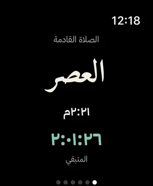
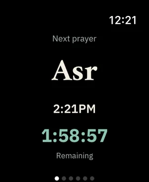
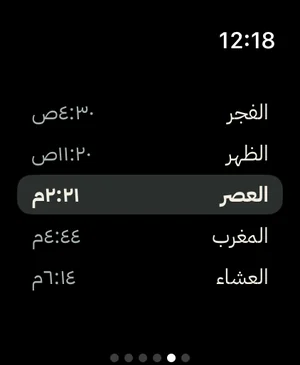
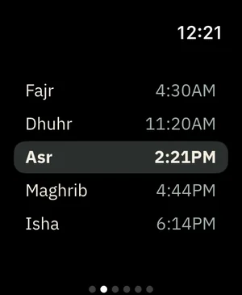
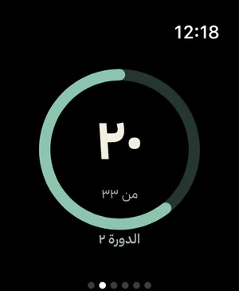
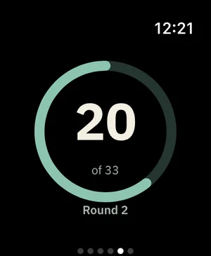
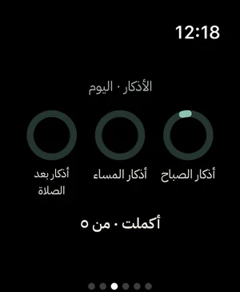
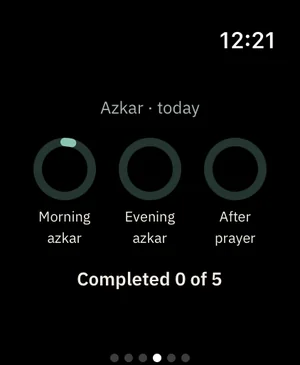
التطبيقThe app
صُمّم بعنايةCrafted with care
عربي أولًاArabic first
مع واجهة إنجليزية كاملة.With a complete English interface.
المظهرAppearance
فاتح وبني وداكن، مع الانتقال إلى الوضع الداكن بعد المغرب تلقائيًا.Light, sepia and dark, with an automatic switch to dark after Maghrib.
اكتشف طيبةDiscover Taybah
جولة تعرّفك على الميزات خطوة بخطوة.A guided tour of the features, step by step.
التنزيلات والمساحةDownloads and storage
تحكّم فيما تنزّله وفي مساحته، مع خيار التنزيل عبر Wi-Fi فقط.Control what you download and its size, with a Wi-Fi-only option.
سهولة الوصولAccessibility
يدعم VoiceOver وTalkBack وتكبير النص وتقليل الحركة.Supports VoiceOver, TalkBack, larger text and Reduce Motion.
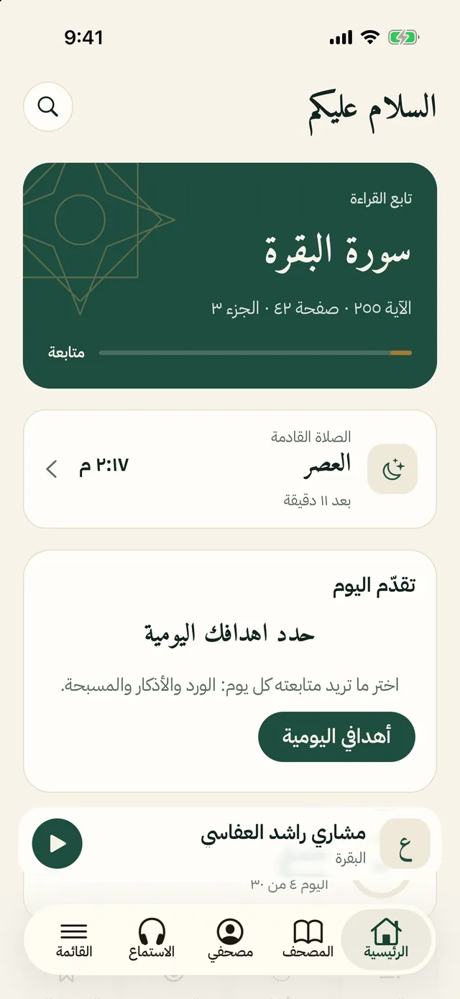
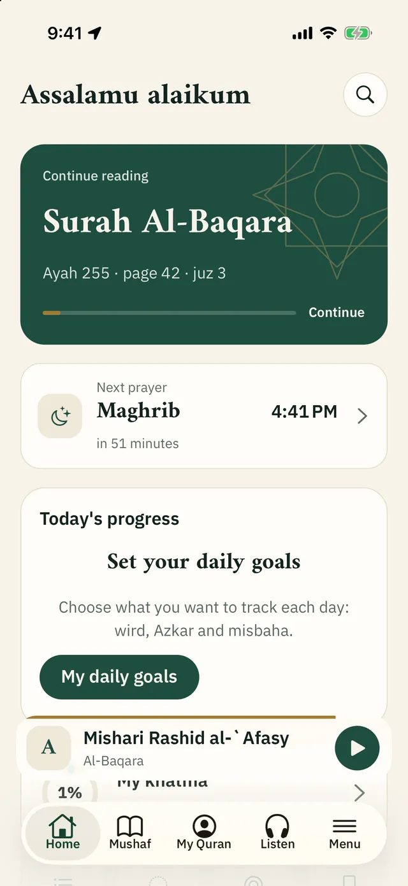
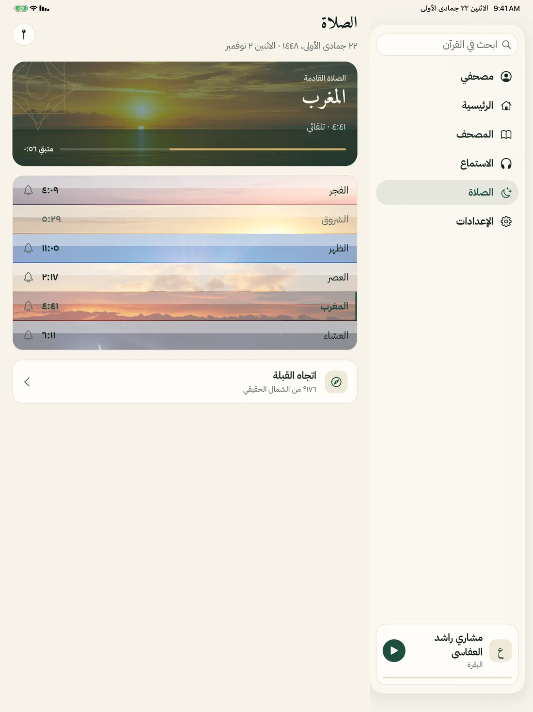
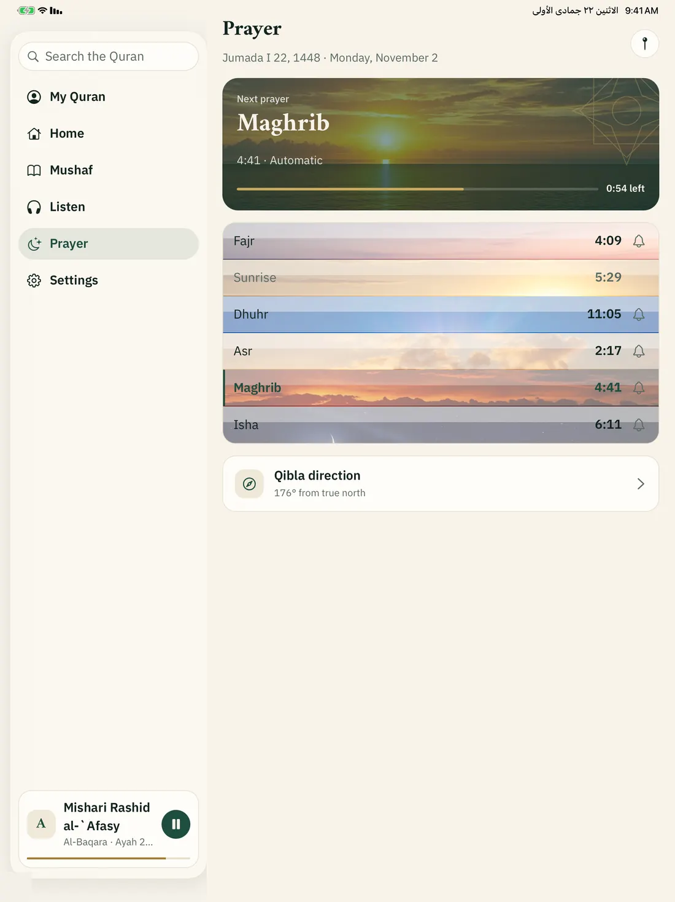
مجاني، بلا إعلانات ولا حسابFree. No ads. No account.
تطبيق مجاني، صدقةً جارية نسأل الله أن يتقبلها، وأن ينفع به.Taybah is free. We ask Allah to accept it as a sadaqah jariyah and to make it of benefit.